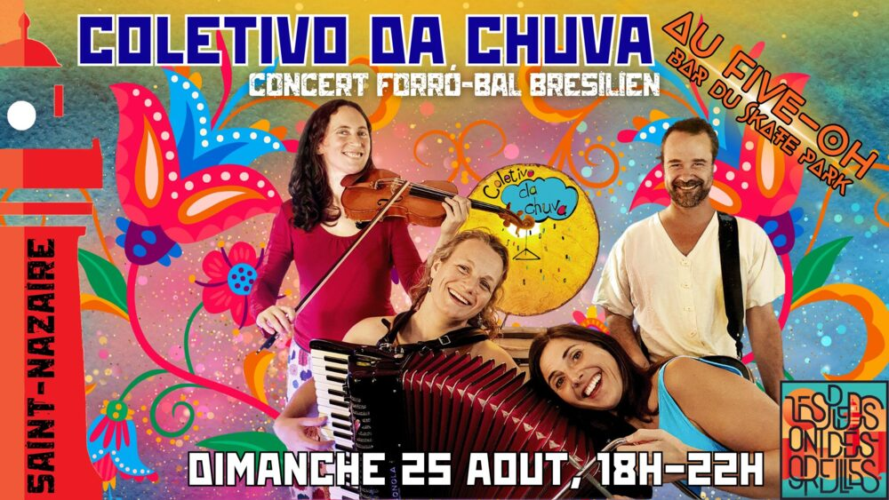

Concert du Coletivo da Chuva

Lieu : Five-Oh, skatepark, boulevard Albert 1er, Saint-Nazaire
Forró after-beach avec le Coletivo da Chuva, face à la mer, sur la terrasse en bois du Five-Oh.
18h : début du bal. 18h30 : concert. 21h30 : on baisse le son.
Participation libre et consciente (autour de 10 €). En cas de mauvais temps, repli dans une salle polyvalente de la ville.